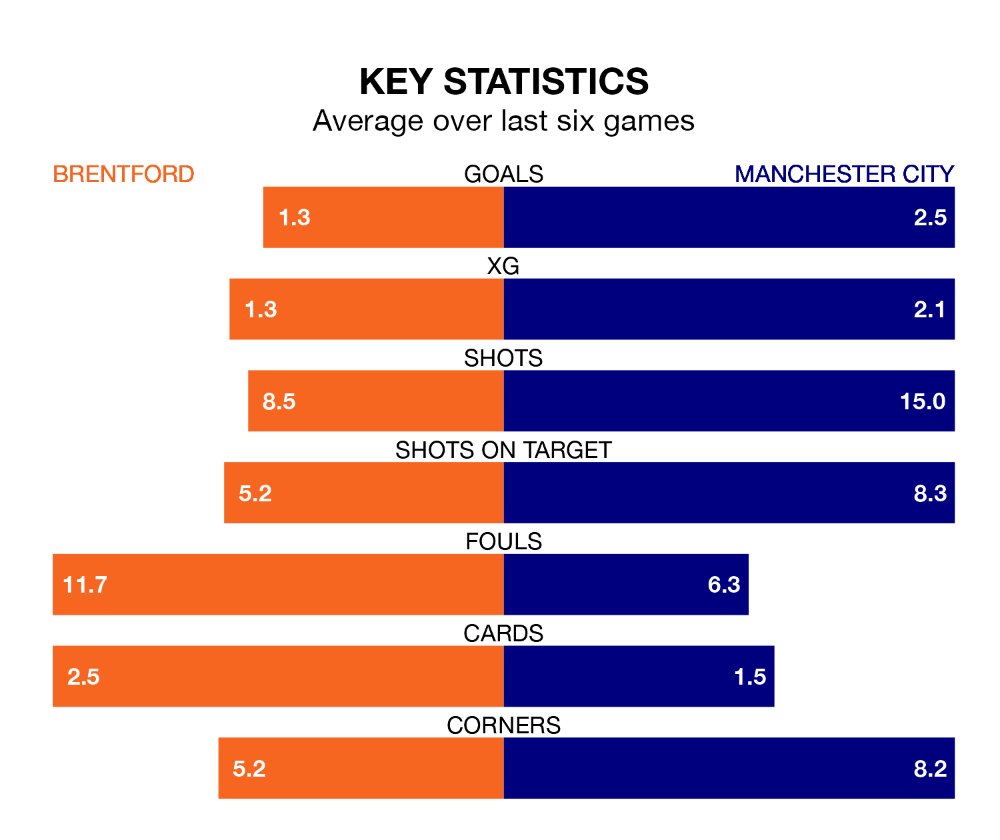

Manchester City are strong favourites to take all three points despite Brentford's home advantage in Monday's late match at the Gtech Community Stadium.
*Betting Company* are offering odds of 1.28 on City sealing the win, with the visitors sitting third in the Premier League table.
Brentford, who are 16th in the league and 24 points behind the Citizens, are priced at 7.25 to win. A draw is set at 4.75.
With 51 goals in 21 games so far this season, City are the league's second-highest scorers with 2.4 goals per game. And they are conceding fewer than average, letting in 24 goals at a rate of 1.1 per game.
Brentford, meanwhile, are below average scorers, with 1.5 goals per game, compared to a league average of 1.6. They have conceded 1.7 goals per game.
In Erling Haaland, the Citizens have the league's most on-form striker so far this season. He has notched 14 goals in 16 appearances.
His goal rate of one every 94 minutes is quicker than that of Bryan Mbeumo, the Bees's top scorer with a goal every 184 minutes, and a total of seven goals in 15 games.
The home side are in bad form in the Premier League, with one win and five losses from their last six games.
With five wins and a draw over that period, the visitors' form is much better – they have taken 16 points from 18, compared to Brentford's three.
In the last five years, Brentford and City have played each other on four occasions. They won two each.
On average, the Bees scored 0.8 goals and the Citizens 1.0 in those matches.
Their last meeting was on May 28, when Brentford won 1-0 at home.
Brentford's last match was on Wednesday, a 3-2 loss against Tottenham Hotspur, with Ivan Toney and Neal Maupay getting the goals for the Bees.
City beat Burnley 3-1 last time out, also on Wednesday, with Julián Álvarez (two) and Rodri on the scoresheet.
Monday's match will be refereed by Jarred Gillett, who has taken charge of 10 Premier League games so far this season, issuing two red cards and booking 52 players. He has awarded four penalties.
The last City game Gillett refereed was the 2-1 win away at Sheffield United on August 27. He is yet to oversee a match featuring Brentford this season.
Updated: 11:47 (UTC), 05/02/24